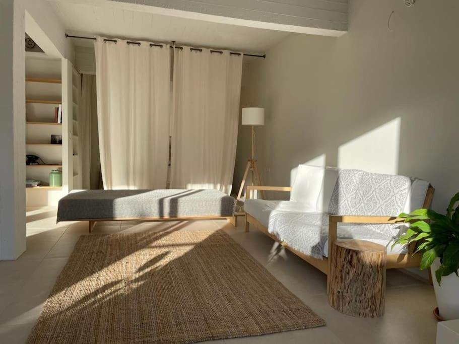
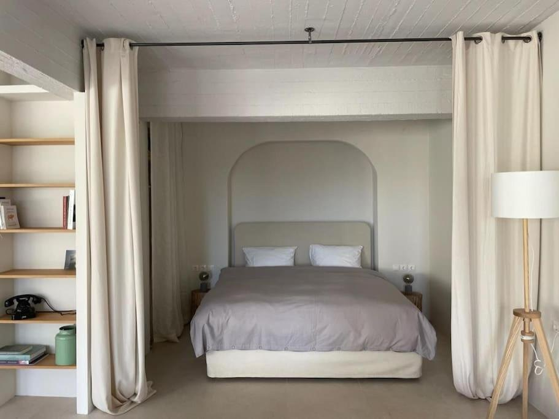
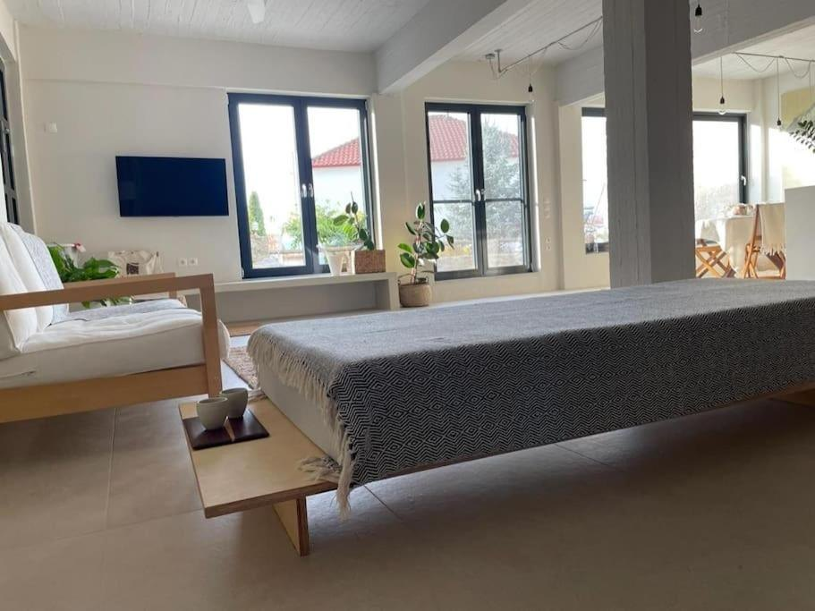
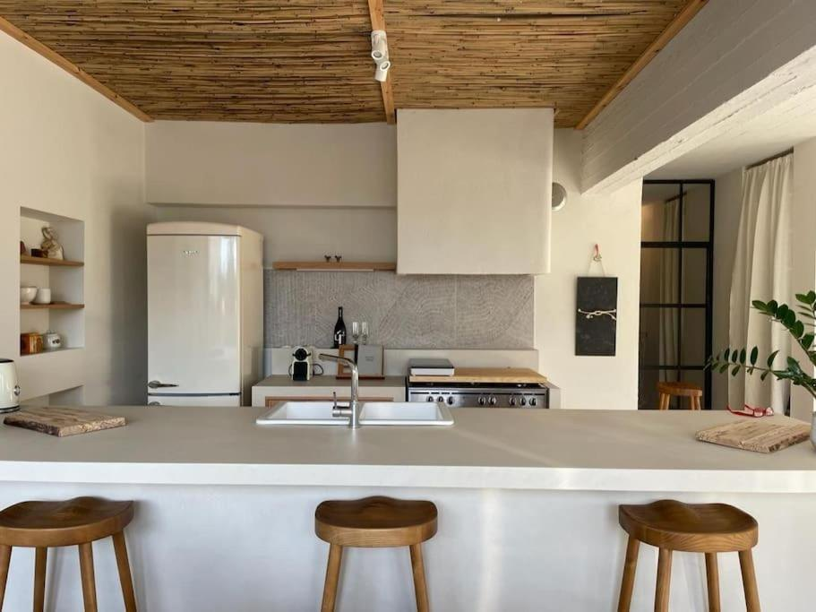
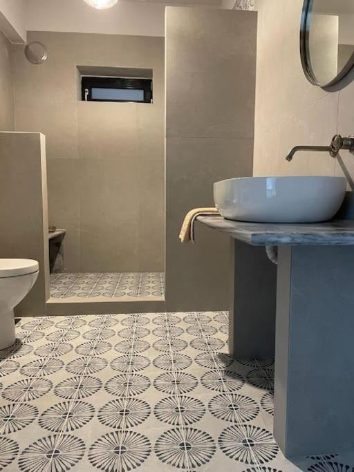
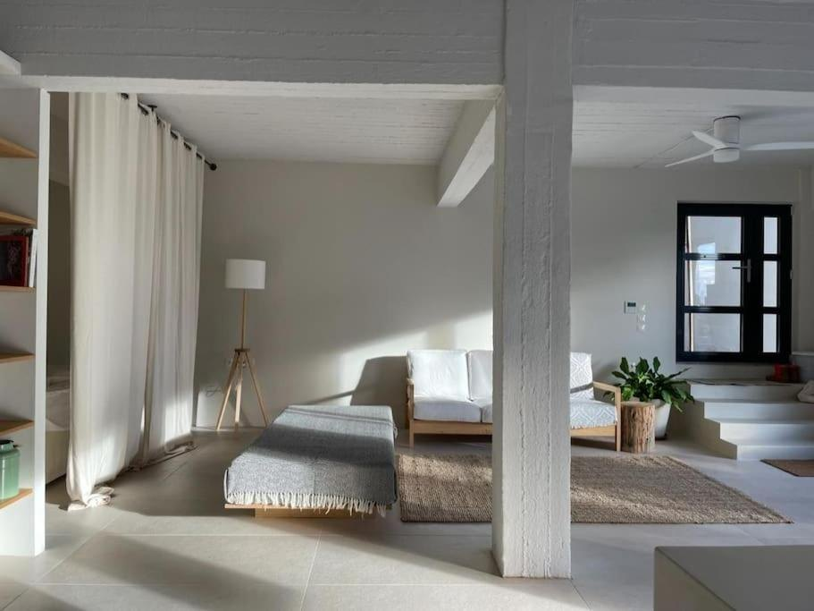
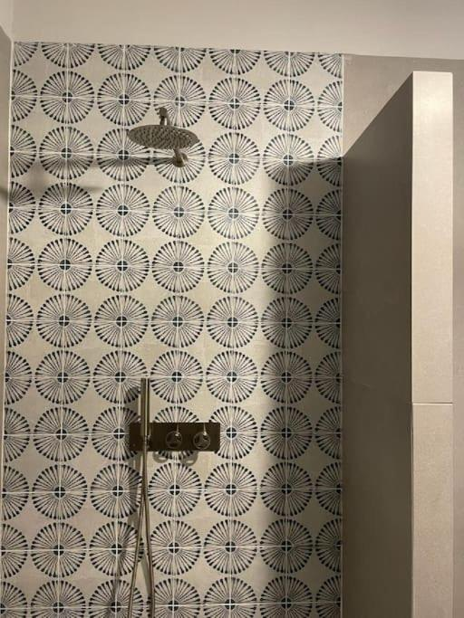

Ένα κατάλυμα με χαρακτήρα, δίπλα στην πλατεία του χωριού, λίγα λεπτά από τους πελεκάνους της Κερκίνης.


Όχι ξενοδοχείο. Ένα σπίτι, δοσμένο σ' εσένα, πάνω από τη λίμνη.
Για πάνω από τριάντα χρόνια εδώ ήταν το ξυλουργείο του χωριού. Σήμερα είναι ένα αυτόνομο διαμέρισμα ογδόντα τετραγωνικών, δυο βήματα από την πλατεία των Άνω Ποροΐων, με δική του είσοδο και ιδιωτική αυλή.
Μέσα, ένας ενιαίος, ανοιχτός χώρος: λευκοί τοίχοι, ταβάνι από καλάμι, ένα ντιβάνι λουσμένο στο φως, μια κανονική κουζίνα κάτω από μια σειρά ξύλινα σκαμπό, κι αληθινά έργα τέχνης στους τοίχους. Η ενδοδαπέδια θέρμανση κρατά τη θερμοκρασία σταθερή, χωρίς σώματα καλοριφέρ να χαλούν την εικόνα. Φιλοξενεί άνετα δύο ανθρώπους και μοιάζει με σπίτι που σου το παραχωρεί κάποιος με προσεγμένο μάτι.
Η Κερκίνη ήταν πάντα μια μονοήμερη: ερχόσουν ένα πρωινό με τα κιάλια κι έφευγες πριν νυχτώσει, γιατί δεν υπήρχε πουθενά ν' αράξεις.
Η Casa Massina είναι ο χώρος που το αλλάζει αυτό: ένα πραγματικά καλοφτιαγμένο κατάλυμα σ' έναν τόπο που δεν είχε. Χωρίς σπα, χωρίς concept, χωρίς ταμπέλες παντού. Έλα για το πρωινό στο νερό και μείνε για την ησυχία που ακολουθεί.
Ένας από τους λόγους που η Casa Massina μοιάζει σπίτι κι όχι ενοικιαζόμενο κατάλυμα είναι ότι τα έργα μέσα της είναι αληθινά. Μερικά αξίζει να τα ξέρεις πριν έρθεις.
Ένα γλυπτό από λευκό μάρμαρο Νάξου, τοποθετημένο μπροστά στο τζάμι ώστε το φως να περνά μέσα κι ολόγυρά του.
Ένας πίνακας που δένει τον κεντρικό τοίχο και δίνει το χρώμα στον χώρο.
Μια σύνθεση από λεπτές κλωστές, κρεμασμένη πάνω από τον καναπέ, που παίζει με το φως όλη μέρα.
Χειροποίητα κεραμικά σε έντονο χρώμα, μέσα στον ανοιχτό χώρο.
Λίγο πιο κάτω από το χωριό απλώνεται η λίμνη Κερκίνη, υγρότοπος Ραμσάρ και περιοχή Natura 2000, όπου αργυροπελεκάνοι και ροδοπελεκάνοι φτάνουν κατά εκατοντάδες, κοπάδια βουβάλια στέκουν στα ρηχά, και πάνω από τριακόσια είδη πουλιών περνούν μέσα στη χρονιά.
Βγαίνεις με τα πρώτα φώτα σε μια πλάβα, την παραδοσιακή πλατή βάρκα της λίμνης, γλιστράς ανάμεσα στους πελεκάνους και τις μισοβυθισμένες ιτιές, και γυρνάς για πρωινό. Τα πουλιά είναι στα καλύτερά τους τους κρύους μήνες, από το φθινόπωρο ως τις αρχές της άνοιξης. Γι' αυτό έρχεται ο κόσμος — κι εδώ, επιτέλους, αξίζει να μείνεις και τη νύχτα.
 Λίμνη Κερκίνη. Φωτογραφία: Vassilios Vescoukis, Wikimedia Commons (CC BY-SA 4.0)
Λίμνη Κερκίνη. Φωτογραφία: Vassilios Vescoukis, Wikimedia Commons (CC BY-SA 4.0)
Ντόπιοι βαρκάρηδες βγάζουν μικρές παρέες στην Κερκίνη με την ανατολή, μέσα στα πουλιά και τα μισοβυθισμένα δέντρα. Το κλασικό πρωινό της λίμνης — αυτό που θα θυμάσαι.
Πελεκάνοι, ερωδιοί, κορμοράνοι, τσικνιάδες και αρπακτικά, και τα βουβάλια στις όχθες. Φέρε κιάλια· το κέντρο πληροφόρησης και τα παρατηρητήρια σε βοηθούν να διαβάσεις τη λίμνη.
Πάνω από το χωριό απλώνονται οι πλατανόσκιωτες πηγές και τα μονοπάτια του Μπέλες, στη συνοριακή κορυφογραμμή. Δροσερό περπάτημα και μεγάλη θέα, λίγο πιο πάνω από την πόρτα.
Οι ταβέρνες του χωριού μαγειρεύουν ό,τι δίνει ο τόπος: βουβάλι Κερκίνης, ψάρια της λίμνης κι αυθεντικές μακεδονίτικες πίτες. Και στο διαμέρισμα σε περιμένει πλήρης κουζίνα.
Μονοήμερες φτάνουν στα ιαματικά λουτρά του Σιδηροκάστρου, στην πόλη των Σερρών και στους αρχαιολογικούς χώρους της κοιλάδας του Στρυμόνα. Ήσυχοι δρόμοι, λίγος κόσμος.
Κρύα, καθαρά πρωινά για τα πουλιά τον χειμώνα· καταπράσινη και ήρεμη το καλοκαίρι. Δεν υπάρχει λάθος μήνας, μόνο μια διαφορετική λίμνη κάθε φορά.








Η καλύτερη τιμή είναι αυτή που κλείνεις απευθείας μαζί μας, χωρίς πλατφόρμα στη μέση. Πες μας τις ημερομηνίες σου και κρατάμε το σπίτι για σένα.
+30 694 467 7617Δίπλα στην πλατεία του χωριού, στη βόρεια Ελλάδα, κάτω από την κορυφογραμμή του Μπέλες. Περίπου μία ώρα από τη Θεσσαλονίκη, μισή από τις Σέρρες — και δέκα λεπτά κάτω στη λίμνη.
Ο πιο απλός τρόπος είναι να μας πάρεις στο +30 694 467 7617. Απαντάμε οι ίδιοι, επιβεβαιώνουμε τις ημερομηνίες επιτόπου και σου δίνουμε την καλύτερη απευθείας τιμή. Μπορείς επίσης να κλείσεις μέσω Airbnb ή Booking.com.
Δύο άτομα, με πραγματική άνεση. Είναι ένα αυτόνομο διαμέρισμα που κλείνει για μία παρέα κάθε φορά — έχεις πάντα ολόκληρο τον χώρο δικό σου.
Για τα πουλιά, από το φθινόπωρο ως τις αρχές της άνοιξης, όταν οι πελεκάνοι είναι εδώ και το φως είναι καθαρό. Το καλοκαίρι είναι πράσινο, ήσυχο κι ανέμελο. Κάθε εποχή δίνει διαφορετική λίμνη.
Ναι, δωρεάν πάρκινγκ δίπλα στο σπίτι, και η πλατεία με τις ταβέρνες είναι ένα λεπτό με τα πόδια.